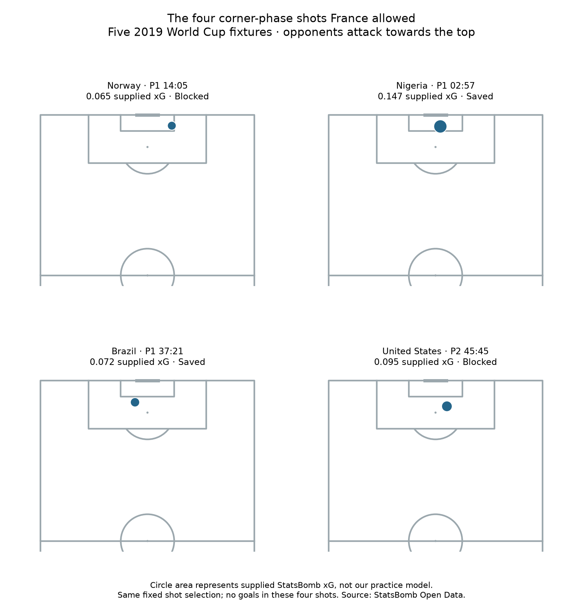

Football analyst training · Lesson 61
Zero goals does not mean zero danger.
We already found four opposition shots from corners against France. Now we read the supplied StatsBomb xG for those same shots. The selected shots have not changed.
The completed assignment
- Norway: 0.065 xG, blocked.
- Nigeria: 0.147 xG, saved.
- Brazil: 0.072 xG, saved.
- USA: 0.095 xG, blocked.
Using the unrounded values, the total is 0.379 xG and the average is 0.095 xG per shot. Actual goals: zero.

Where did these numbers come from?
supplied_xg = event['shot']['statsbomb_xg']
They were already in the provider's raw data. We joined each selected shot ID back to its event. We did not run or retrain our earlier distance-only practice model. Missing xG causes an error rather than becoming zero.
Nigeria's 0.147 means the provider estimated about a 14.7% chance for that shot. It is an estimate, not a known true probability. None of the four shots scoring is compatible with these estimates; it does not prove unusually good defending or goalkeeping.
Keep the denominators clear
0.379 ÷ 4 shots ≈ 0.095 xG per shot. Dividing by 15 corners instead gives about 0.025 xG per corner faced. They answer different questions. The total 0.379 is an expected-goal sum, not a 37.9% probability of conceding at least one goal.
Practice: why can we have zero goals but positive xG?
A chance can fail. xG estimates the chance of scoring before knowing the outcome; goals tell us what happened. A saved or blocked shot can still have positive xG.
Run 61_defensive_corner_shot_quality.py in Spyder and read the report. Assisted assignment; ask your teacher about any unclear calculation.